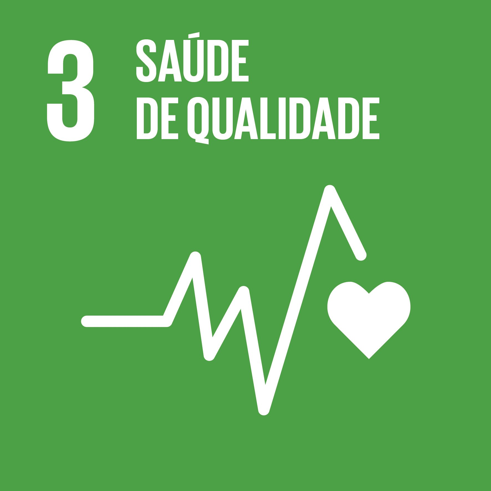
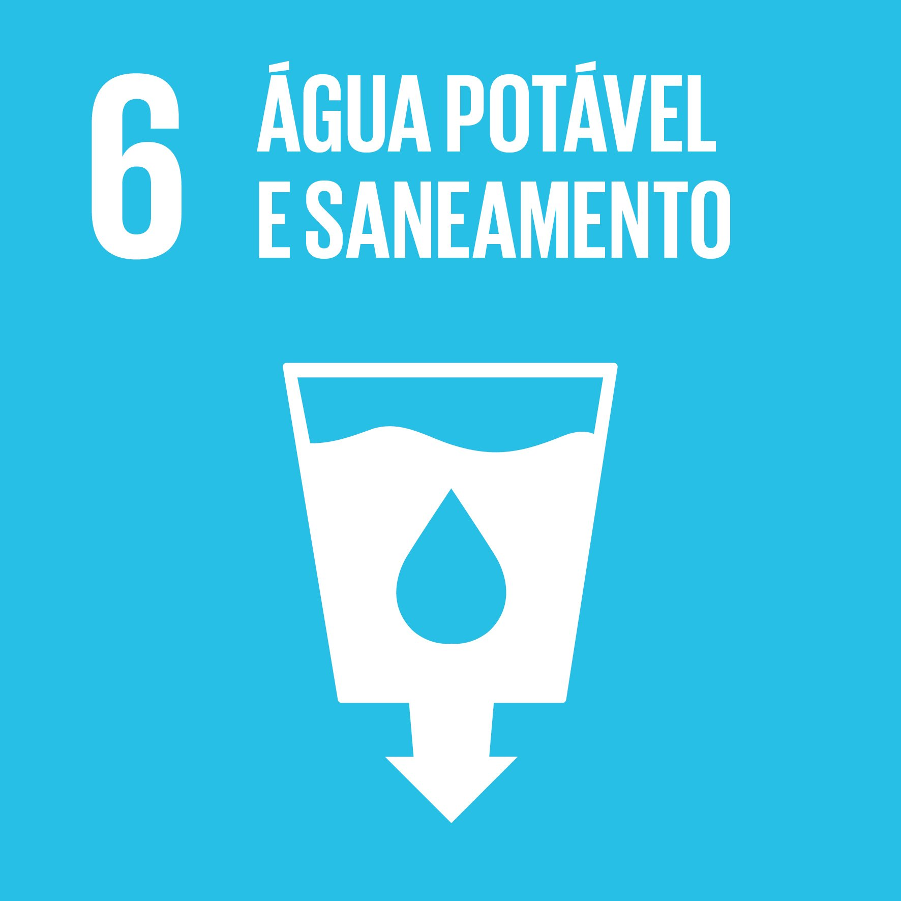
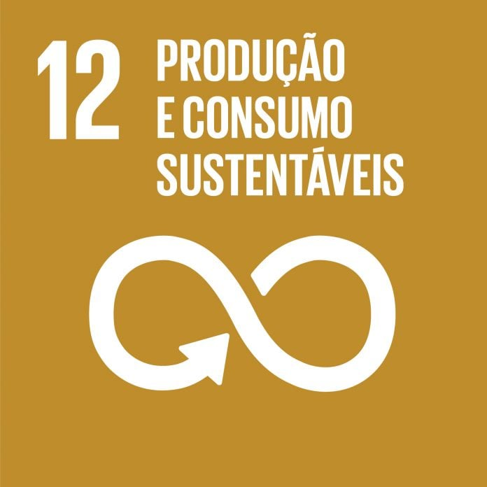

Sobre o Aqualogic
A Organização Mundial da Saúde recomenda cerca de 2 L de água por dia. Tanto a insuficiência como o excesso de ingestão afetam a saúde desde queda da pressão arterial, problemas renais e prisão de ventre até cãibras, menor desempenho desportivo e risco de arritmias em idosos. Propomos uma pulseira que estima o estado de hidratação através de medições elétricas, óticas e variáveis fisiológicas, integradas em modelos de aprendizagem automática.
Na vertente elétrica, uma vez que a presença de água e eletrólitos na superfície cutânea altera a resistividade, mediremos a resistência da pele em kiloohms com elétrodos como entrada do modelo. No domínio ótico, um emissor de 970 nm e um fotodíodo permitem calcular um coeficiente de absorção pela lei de Beer–Lambert, indicador da água nos tecidos superficiais. Além dos métodos já descritos, a pulseira poderá também avaliar a hidratação com base na elasticidade cutânea. Para isso, será integrada uma microestrutura flexível na parte interna da pulseira (fabricada em silicone), contendo um sensor piezoelétrico ou de pressão, que aplica uma leve compressão na pele. O sistema mede a resposta de retorno (tempo e intensidade), permitindo determinar a elasticidade. Estas leituras ajudam a distinguir alterações transitórias (por exemplo, suor) de variações reais do estado hídrico.
O modelo geral será treinado com regressões que relacionam resistência, coeficiente de absorção, elasticidade estimada, temperatura e massa com o tempo desde a última ingestão e o volume ingerido, permitindo gerar alertas personalizados de défice ou excesso hídrico. A combinação de sinais elétricos e óticos, corrigida por temperatura e massa corporal, cria uma base robusta para inferir o estado de hidratação e reduzir falsos positivos provocados pelo suor ou diferenças anatómicas. Posteriormente, a nossa aplicação móvel permitirá reunir feedback binário sobre as medições do sensor e, consequentemente, ajustar o modelo geral a cada pulseira e utilizador.
Este projeto alinha-se com os ODS 3, 6 e 12 ao promover a saúde e o bem-estar através da deteção precoce e prevenção de problemas relacionados com a hidratação (ODS 3), ao incentivar o uso consciente e monitorizado da água pessoal como recurso essencial (ODS 6), e ao apoiar práticas de consumo responsável mediante alertas personalizados que evitam desperdício e otimizam o uso de recursos (ODS 12).
  